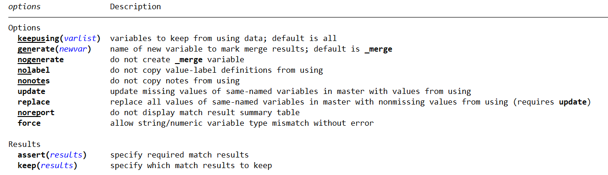

Constructing datasets - Part 1
Luiza Andrade and Sushmita Samaddar
What is data construction
- Constructing variables means processing the data points as provided in the raw data to make them suitable for analysis
- Construction transform clean data into analysis data
- This is done by creating derived variables (e.g. dummies, indices, interactions), reshaping, combining and aggregating data sets
- It is the only stage when changes will be made to data points
- Construction is closely linked to research design and questionnaire design
- Ideally, indicator construction should be done right after data cleaning, according to the pre-analysis plan
use "../DataWork/Data/Clean/process_clean.dta", clearWhat is data construction
- Inputs
- One or more clean data sets
- Outputs
- One or more constructed data sets
- One data dictionary/codebook for each constructed data set
- Construction documentation
- Tasks
- Unit of observation → Unit of analysis
- Observed measurement → Analysis indicator
Why is construction a separate task from data cleaning?
- To clearly differentiate the data originally acquired data from the result of data processing decisions
- To ensure that variable definition is consistent across data sources
- For example, we may have multiple rounds of data collection that will be cleaned separately, but we want all of them to be constructed in the same manner
What to plan ahead
- What are the final indicators needed to answer a research question
- How they are defined and calculated
- What are the steps to get there
- How to deal with different rounds of data collections
What to plan ahead
image
Setting the stage
Exercise
- Launch Stata by opening the Stata project in
DataWork/Introduction to Stata.stpr - Open a new do-file
- Load the clean process data set into
Setting the stage
Exercise
use "Data/Clean/process_clean.dta", clearCreate new numeric variables
Here are some simple mathematical operations that can be applied to numeric variables:
- Addition:
numvar1 + numvar2ornumvar + num - Subtraction:
numvar1 - numvar2ornumvar - num - Multiplication:
numvar1 * numvar2ornumvar * num - Division:
numvar1 / numvar2ornumvar / num
Construct numeric variables
Exercise: use the generate command to create a new variable in the data set that changes the order of magnitude of contract values from 1 HKR to 100.000 HRK.
Construct numeric variables
Exercise: use the generate command to create a new variable in the data set that changes the order of magnitude of contract values from 1 HKR to 100.000 HRK.
gen value_100k = Process_VrijednostNabaven/100000Construct date difference variables
The difference between two date-time variables can the calculated using the function datediff():
datediff(date1, date2, unit) where units can be:
- “day” or “d” for day
- “hour” or “h” for hour
- “minute”, “min”, or “m” for minute
- “second”, “sec”, or “s” for second
- “millisecond” or “ms” for millisecond
- “month”, “mon”, or “m” for month
- “year” or “y” for year
Construct date difference variables
Exercise: calculate the difference in days between the initiation of the process and the deadline for bid submission. Call it bid_period
Construct date difference variables
Exercise: calculate the number of days between the initiation of the process and the deadline for bid submission. Call it bid_period
gen bid_period = datediff(initiation_date, bid_submission_date, "day")
summarize bid_periodExtract information from date variables
The following functions can be used to create derived variables can be created from dates in %td format
year(d): numeric year corresponding to datedquarter(d): numeric quarter of the year corresponding to datedmonth(d): numeric month corresponding to datedweek(d): numeric week of the year corresponding to datedday(d): numeric day of the month corresponding tod
Extract information from date variables
year_init = year(initiation_date)Exercise: create two new variables, representin the month and quarter when the process was initiated
Extract information from date variables
Exercise: create two new variables, representin the month and quarter when the process was initiated
month_init = month(initiation_date)
quarter_init = quarter(initiation_date)Extract information from date variables
mdy(M,D,Y): the date corresponding to month M, day D, year Yyq(Y,Q): the quarterly date corresponding to year Y, quarter Q
For example, gen today = mdy(10,19,2021) and gen today = td(19oct2021) would create the same values.
Exercise: create a new variable called yquarter_init that indicates
Extract information from date variables
Exercise: create a new variable called yquarter_init that indicates
gen yquarter_init = yq(year_init, quarter_init)
format yquarter_init %tq
codebook yquarter_initCreate new variables: egen
- Apart from the
generatecommand, there is another command that is very useful when creating new variables - It is called
egen, or “extended generate” - There is a number of functions that will only work when used with
egen - There are too many of them, and we will not discuss all, but you can see a complete list by typing
help egen
Create new variables: egen
- This command is particularly useful when we want to aggregate information across rows without changing the level of observation in the data set
- Say, for example, that we want to calculate the weight of one process on the total contracted value by an entity
- We would need to divide the process value by the total value contracted by the entity
egenallows us to calcualte the total contracting value without changing the unit of observation of the data set as follows
egen total_value = sum(process_value), by(entity)Create new variables: egen
Exercise: create a new variable called nr_process that counts the total number of processes started by a procuring entity.
- Tip: look at
egen’s help file to find a function that counts the number of non-missing observations for a variable.
Create new variables: egen
Exercise: create a new variable called nr_process that counts the total number of processes started by a procuring entity.
egen nr_process = count(process_value), by(entity)Create new variables: best practices
- Create new variables instead of overwriting the original information
- Order the data set so that related variables are close to each other
Creating aggregate measures: best practices
- Check and double-check the value assignments of questions, as well as their scales, before constructing new variables based on them
- Look at the distributions of both the original and the constructed variables
- Be mindful of how missing values are treated
Aggregating observations: collapse
- We have seens how
egenallows us to aggregate observations by group without changing the unit of observation of the data set - Sometimes, however, we do want to change the unit of observation
- In these cases, we will use the command
collapse - It works as follows:
collapse (sum) total_value = process_value (count) nr_bids = bid_id, by(entity)Aggregating observations: collapse
Note that running this command will completely change the data set in memory
codebookAggregating observations: collapse
There is a number of different statistics that can be used with collapse, including:
meanmediansdsumcountpercentminmax
Combining data sets
- All the construction operations we have seen so far are using a single data set
- However, we often have separate tidy data sets that we need to combine to create our final indicators
- There are two main ways of combining data sets:
- Appending, when we combine data sets that have more or less the same columns, but different instances of the unit of observation to increase the number of observations
- Merging, when we combine data sets that comtain more or less the same instances of the unit of observation, but different variables, to create a data set with more columns than the original ones
Can you think of cases when you would need to perform merges or appends?
Combining data sets
- Examples of appending include:
- Combining data from different years
- Combining data from different countries
- Examples of merging include:
- Combining data on contracts and bids for a given process
- Including product information on contract data set
- Adding entity information on a process data set
Combining data sets: append
append using filename [filename ...] [, options]- Note that now we have more than one data set, which has not happened so far
- Stata can only have one data set in memory at once, so we need to call data sets saved as .dta (or as temporary files, but that is a more advanced topic)
appendwill add the observations in the using data set (the one referred to by its file name) to the master data set (the one that is currently loaded in the memory)
append using "Data/Intermediate/entities_2018.dta" "Data/Intermediate/entities_2019.dta"Combining data sets: append
- When a variable is present in only one of the datasets, its values will be missing for all observations that came from the data set that did not include it
- If columns with the same name have different types of variables in the two data sets (for example, one is a string and one is numeric), this will cause the append to fail
- You can use the option
gen(newvar)to include a new variable indicating from which data set each observation came - Note that it only makes sense to append data sets that have the same unit of observation
Combining data sets: append
Exercise: explore the different options of the command append using the different years found in the Data/Intermediate folder
Combining data sets: merge
One-to-one merge on specified key variables
merge 1:1 varlist using filename [, options]Many-to-one merge on specified key variables
merge m:1 varlist using filename [, options]Combining data sets: merge
- It only makes sense to merge two data sets that have common observations
- The syntax of the command makes it clear that when merging two data sets, they need to have at least one variable in common
- This is one the points in the data work where having uniquely identifying variables is extremely important!
- When merging two data sets, we first need to load one of them in memory (this will be called the master data), and then refer to the other one (the using data set) by its filename
use "Data/Clean/process_clean.dta", clear
merge 1:m Nadmetanje_ID usign "Data/Clean/contract_clean.dta"Combining data sets: merge
use "Data/Clean/process_clean.dta", clear
merge 1:m Nadmetanje_ID usign "Data/Clean/contract_clean.dta"- Note that Stata lets you know how well the match between the two data sets went
- There are also a series of options that allow you to test the the result of the merge matches your expections
Combining data sets: merge

Where things go wrong
- The more complex construction tasks involve changing the structure of the data, such as sample and unit of observation
- Merges and collapses may change the number of observation and create missing entries
- Make sure to read about how each command treats missing observations
Write pseudocode
- Describe the steps to create your indicator in plain English
- Refine the sub-steps involved
- When you are getting into too much detail, write code
- Think about possible errors that may come up at each sub-step
Think about expected results
- Think about how the command you are using treats missing values
- Try to predict the result you will get
- Will all observations merge?
- Will the number of observations change?
- Will missing values be created?
Document the observed results
- Explore the actual results from the operation
- Write down in comments what happened
- Add comments to the code explaining unexpected consequences
Construction indicators in panel data sets
- It is common to construct indicators soon after receiving data from a new survey round
- However, creating indicators for each round separately increases the risk of using different definitions every time
- Having a well-established definition for each constructed variable helps prevent that mistake
- But the best way to guarantee it won’t happen is to merge all rounds of data collection first and create the indicators for all rounds in the same script
- In addition to preventing inconsistencies, this process will also save you time and give you an opportunity to review your original construction code
Constructed data sets
- A constructed data set is built to answer an analysis question
- Different pieces of analysis may have different units of analysis
- You may have as many constructed data sets as required for analysis
- Don’t worry if you cannot create a single, “canonical” analysis data set
- If you have multiple constructed data sets, name them carefully so you know when to use each of them
Documenting construction
- Documentation is an output of construction as relevant as the code and the data
- Someone unfamiliar with the project should be able to understand the contents of the analysis data sets, and the steps taken to create them
- Document exactly how each variable is derived or calculated
- Carefully record how specific variables have been combined, recoded, and scaled, and refer to those records in the code
- This can be part of a wider discussion with your team about creating protocols for variable definition, which will guarantee that indicators are defined consistently across projects
Construction documentation should include
- A data dictionary with the definition of all variables in the each analysis data table
- A codebook with summary statistics and other description of all variables in each analysis data table
- References to the sources of variable definitions
- Comments on the code explaining each step of the construction and referring to the data dictionary and sources of variable definitions
Recap
- During construction, you will create purpose-built datasets to answer your research questions
- You should maintain separate cleaning, construction and analysis scripts, even if they are simultaneously edited and executed by the master script
- Create purpose-built analysis datasets, naming and saving them appropriately, and using them for the corresponding analytical tasks, rather than building a single dataset
- Carefully document each of these steps in plain and clear language, so that the rationale behind each research decision is clear for any research consumer
Why is construction a separate task from data analysis?
- In practice, data construction often times happens at the same time as data analysis
- As you analyze the data, different constructed variables will become necessary, as well as subsets and other alterations to the data
- However, even if construction ends up coming before analysis only in the order the code is run, it’s important to think of them as different steps
Why is construction a separate task from data analysis?
- Maintainability: If every analysis script cleans and constructs variables from the raw data, any edits to this process need to be replicated in all scripts that use the same final variable.
- Preventing errors: The difficulty to maintain such scripts increases the chances that at least one of them will have a different sample or variable definition.
Doing all variable construction and data transformation in a unified script, separate from the analysis code, helps avoid this and ensures consistency across different outputs.
Appendix
Advanced mathematical operations
**Logarithm:** `ln(numvar)`
**Square root:** `sqrt(numvar)`
**Exponentiation:** `numvar^num`Create new date variable
gen date2 = mdy(m2, d2, 2002)Aggregating varaibles
gen income_total = income_wage + income_rent + income_salesegen income_total = rowtotal(income_wage income_rent income_sales)egen income_total = rowtotal(income_wage income_rent income_sales), m